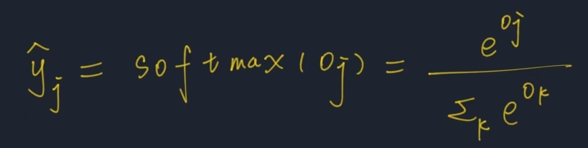
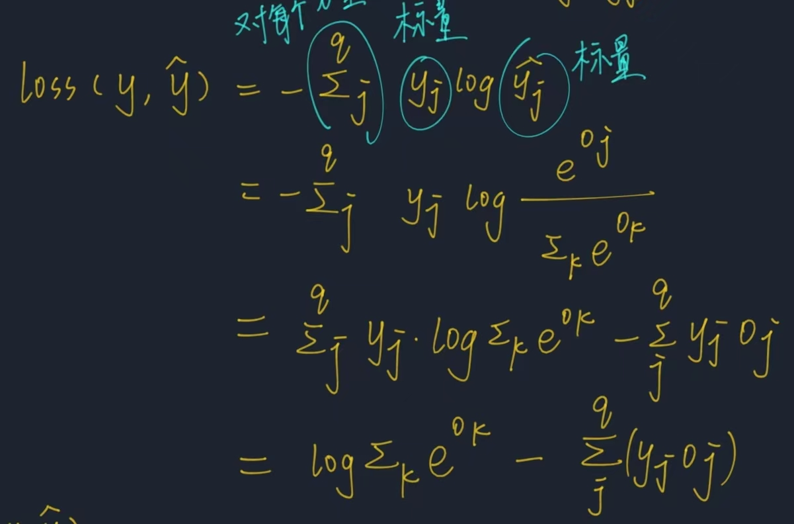
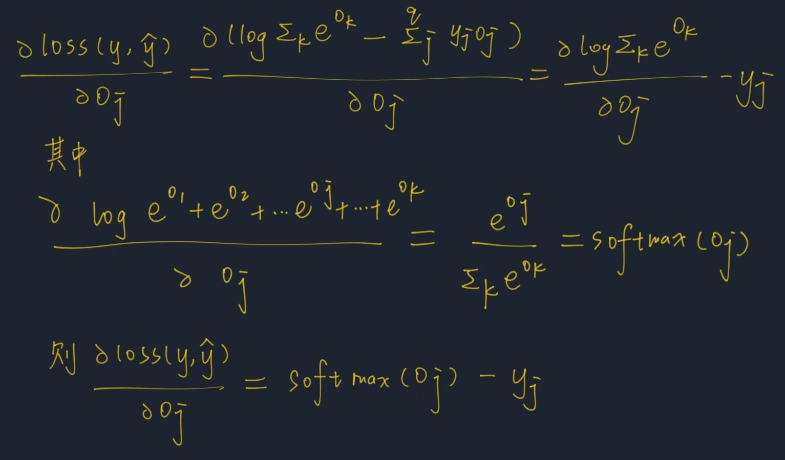

softmax回归
回归和分类是两种问题，回归用来预测多少，可以输出连续的值；分类则用来预测属于哪一类。
分类也可以分为硬分类和软分类，硬分类就是指定属于某种类别，软分类还要输出属于某种类别的概率是多少。
softmax回归其实是一种软分类问题，输入为样本属性，输出为样本属于某类的概率，最终取预测概率最大的类别作为预测类别。
本文主要基于神经网络实现softmax回归。
网络架构
数据
假设有n个样本，每个样本有d个属性，共分为q个类别。那么输入矩阵为X (n x d),每一行代表一个样本，每一列代表一种属性。
独热编码
样本的标签（label）y采用独热编码（one-hot encoding）,独热编码就是样本的标签y是一个向量，y的分量个数等于类别的个数。对于某个样本来说，只有样本类别的位置为1，其余元素都为0。
那么样本的标签矩阵Y就是一个n行q列的矩阵，其中每一行只有一个元素为1。
网络参数
对于每个类别，都有一个与线性回归类似的weight向量w和偏置b，那么k个类别的参数共同组成权重矩阵W（d行q列），每一列代表一种类别的weight向量。
同理，每个类别的偏置b作为偏置向量b的一个分量。
计算
网络的输出矩阵记作 O（还未经过softmax处理），O为一个n行，q列的矩阵，计算表达式为：
O的含义是：每一行代表一个样本的预测结果，这一行第k列的值的大小就反映了此样本与该类别的weight向量的相似程度（加上bias后）。值越大说明属于该类的可能性就越大。
softmax
softmax计算式
现在我们仅考虑对一个样本的回归结果向量O进行softmax操作，公式为：
经过softmax后，预测结果为yhat，它的每一个分量都变为0-1之间的数，并且总和为1，也没有改变原来的大小次序，因此softmax相当于进行了一个归一化工作。
得到预测输出yhat后，我们采用交叉熵（cross-entropy）损失函数。交叉熵损失函数的公式为：

y中只有一个分量为1，yhat所有的数都是一个0-1之间的概率值。
将公式中的y和yhat向量展开为各自的分量：

我们就可以对yhat的每个分量求偏导，比如损失函数对yhat的某个分量yj求得偏导为：

可以看出对该分量的求导结果居然就是这个分量softmax后的结果-它的真实值，反映了预测结果与真实值之间的差异。

举个例子说，比如真实标签y为[1 0 0],假设预测输出yhat为[0.5 0.2 0.3],那么对应的梯度向量（由每一个分量的偏导组成）就为[-0.5 0.2 0.3]。如果我们接下来用梯度下降发进行参数的更新，那么预测概率的第一个分量会增加，其他两个分量会减少，预测结果就会与真实结果更相近，这是符合逻辑的。